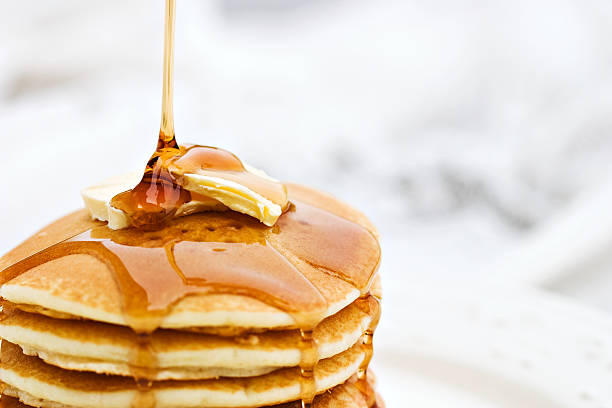

How to make Pancakes the super duper lazy way
These pancakes are great if you're too busy (or lazy) and have a sweet tooth in the morning!

Description
Literally a stack of pancakes. Oh it's got some butter on top and it's been drizzled in maple syrup.
Ingredients
- A box of Pancake Mix from the local Wal-Mart or wherever it doesn't matter
- Water (like a cup of it I guess)
- butter (1 tablespoon)
- maple syrup
Steps
- In a heated skillet, melt the butter.
- While that's going, in a mixing bowl, transfer one package of pancake mix (about 8 cups I think) and mix in 1 cup of water
- Mix thoroughly. You should have a very thick mixture.
- From the pancake batter, take one cup and pour it into the heated buttered pan.
- Monitor the pancake. You'll know to flip it once you see some holes appear on top.
- Flip until both sides are cooked evenly
- Repeat these steps until you run out of batter!
At this point, you should have about 8 pancakes. Take however many you'd like to eat and
stack them! The next steps are purely optional, but recommended for the ultimate
pancake experience!
- add a pad of butter on the top of the pancake stack.
- drizze the stack with maple syrup!
And there you have it! Pancakes!